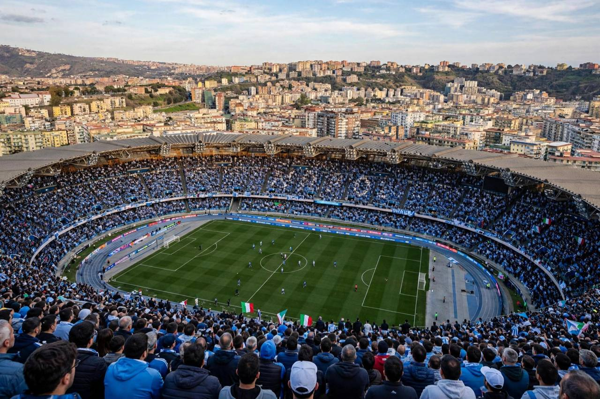

नैपोली और रोमा 3-3 से बराबर, मैकटॉमिने और बालेर्डी के दो-दो गोल
स्टाडियो डिएगो अरमांडो माराडोना में नैपोली 2-0 और फिर 3-2 से आगे था, लेकिन लियोनार्डो बालेर्डी ने 89वें मिनट के हेडर समेत दो गोल किए और रोमा ने 3-3 की बराबरी करके अपना अपराजित सीरी ए रिकॉर्ड बनाए रखा।

मुख्य बिंदु
- नैपोली और एएस रोमा ने शनिवार, 24 अक्टूबर, 2026 को नेपल्स के स्टाडियो डिएगो अरमांडो माराडोना में 3-3 की बराबरी खेली, एक डर्बी डेल सोले में जो आखिरी मिनटों में एक पक्ष से दूसरे पक्ष की ओर झूलता रहा।…
- फ्रैंक अंगुइसा ने 28वें मिनट में ओवरहेड किक से नैपोली को बढ़त दी। Football Italia ने इस फिनिश को बाइसिकल किक बताया, और Tribal Football के अनुसार मैटेओ पोलिटानो की फ्री किक को मार्टेन डे रून ने…
- मैकटॉमिने ने 48वें मिनट में पोलिटानो के क्रॉस पर हेडर लगाकर 2-0 कर दिया। दोनों टीमें मध्य सप्ताह की चैंपियंस लीग जीतों के बाद इस मैच में आई थीं। नैपोली इससे पहले सीरी ए में वेनेज़िया से 3-1 से…
नैपोली और एएस रोमा ने शनिवार, 24 अक्टूबर, 2026 को नेपल्स के स्टाडियो डिएगो अरमांडो माराडोना में 3-3 की बराबरी खेली, एक डर्बी डेल सोले में जो आखिरी मिनटों में एक पक्ष से दूसरे पक्ष की ओर झूलता रहा। स्कॉट मैकटॉमिने ने नैपोली के लिए दो गोल किए और लियोनार्डो बालेर्डी ने रोमा के लिए दो गोल किए, और मेहमान टीम दो बार पीछे से लौटकर सीरी ए के आठवें दौर के मैच से एक अंक ले गई।
फ्रैंक अंगुइसा ने 28वें मिनट में ओवरहेड किक से नैपोली को बढ़त दी। Football Italia ने इस फिनिश को बाइसिकल किक बताया, और Tribal Football के अनुसार मैटेओ पोलिटानो की फ्री किक को मार्टेन डे रून ने हेडर से बाहर निकाला था, उसके बाद अंगुइसा ने गोल किया। यह इस सीजन में पहला लीग गोल था जो रोमा ने हाफ टाइम से पहले खाया, और नैपोली ने ब्रेक तक 1-0 की बढ़त बनाए रखी।
मैकटॉमिने ने 48वें मिनट में पोलिटानो के क्रॉस पर हेडर लगाकर 2-0 कर दिया। दोनों टीमें मध्य सप्ताह की चैंपियंस लीग जीतों के बाद इस मैच में आई थीं। नैपोली इससे पहले सीरी ए में वेनेज़िया से 3-1 से हारा था, और केविन डे ब्रुइने गहरी प्लेमेकर भूमिका में बने हुए थे। Football Italia के अनुसार रोमा को निलंबन के बाद डोनियल मालेन वापस मिले, जबकि लोरेंजो पेलेग्रिनी, पाउलो डिबाला, मानु कोने और माइल स्विलर उपचाराधीन थे।
मैटियास सूले ने 69वें मिनट में रोमा के लिए एक गोल वापस किया। उन्होंने मालेन के साथ वन-टू खेलकर गेंद को निचले कोने में मोड़ दिया और स्कोर 2-1 हो गया। पांच मिनट बाद, 74वें मिनट में, बालेर्डी ने 2-2 की बराबरी कर दी। कॉर्नर के बाद सैंटियागो कास्त्रो ने गेंद को छाती से नीचे उतारा और बालेर्डी ने उसे जाल में ठोक दिया।
नैपोली 83वें मिनट में फिर आगे हो गया। गोलकीपर पियरलुइगी गोलिनी ने लियोनार्डो स्पिनाज़ोला का प्रयास रोका, और मैथियास ओलिवेरा की असिस्ट पर मैकटॉमिने ने क्षेत्र के बाहर से भीड़ के पैरों के बीच से निचले कोने में शॉट लगाकर अपना दूसरा गोल और 3-2 की बढ़त दिलाई।
रोमा खत्म नहीं हुआ था। 89वें मिनट में वेस्ली फ्रैंका ने क्रॉस उठाया और बालेर्डी ने पिछले पोस्ट पर हेडर लगाया। Football Italia के अनुसार गोलकीपर एलेक्स मेरेट ने हेडर को पोस्ट पर खींचा, लेकिन गेंद पहले ही लाइन पार कर चुकी थी, और नैपोली के दावों के बावजूद VAR को सैम बेउकेमा पर कोई फाउल नहीं मिला। बालेर्डी के दूसरे गोल से स्कोर 3-3 हो गया।
नैपोली के मुख्य कोच मासिमिलियानो अलेग्री अतिरिक्त समय के पहले मिनट में सीधे लाल कार्ड से बाहर हुए। Football Italia के लाइवब्लॉग के अनुसार वे टचलाइन पर चिल्लाए: "What did I say? Tell me what I said? No, NO!"
इस बराबरी से रोमा इस सीजन सीरी ए में अपराजित बना रहा, पांच जीत और तीन बराबरी के साथ। Betora ने रोमा के 60 प्रतिशत कब्जे और 24 शॉट तथा नैपोली के 40 प्रतिशत कब्जे और 15 शॉट दर्ज किए, और कॉर्नर 11-2 रोमा के पक्ष में रहे।
स्रोत
Football Italia ने मैच की पूरी रिपोर्ट और स्टाडियो डिएगो अरमांडो माराडोना से लाइवब्लॉग प्रकाशित किया। Tribal Football ने मैच रिपोर्ट दी, Sportradar ने अंतिम स्कोर और गोल करने वाले दर्ज किए, और Betora ने परिणाम और मैच आंकड़े दर्ज किए।
टाइमलाइन
- Oct 24, 2026फ्रैंक अंगुइसा 28वें मिनट में ओवरहेड किक से नैपोली को 1-0 की बढ़त देते हैं।
- Oct 24, 2026स्कॉट मैकटॉमिने 48वें मिनट में मैटेओ पोलिटानो के क्रॉस पर हेडर लगाकर नैपोली को 2-0 आगे करते हैं।
- Oct 24, 2026मैटियास सूले 69वें मिनट में डोनियल मालेन के साथ वन-टू के बाद रोमा के लिए एक गोल वापस करते हैं।
- Oct 24, 2026लियोनार्डो बालेर्डी 74वें मिनट में कॉर्नर के बाद शॉट लगाकर 2-2 की बराबरी करते हैं।
- Oct 24, 2026मैकटॉमिने 83वें मिनट में अपना दूसरा गोल करके नैपोली को फिर 3-2 आगे करते हैं।
- Oct 24, 2026बालेर्डी 89वें मिनट में हेडर से अपना दूसरा बराबरी गोल करते हैं और मैच 3-3 हो जाता है, और नैपोली के कोच मासिमिलियानो अलेग्री अतिरिक्त समय में बाहर होते हैं।